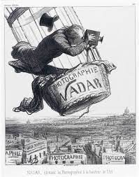

114. Nadar Raising Photography to the Height of Art. Honore Daumier. 1862 CE Lithograph.
- Content
- Nadar often took his balloon over Paris to photograph scenes from above
- Daumier was a satiric artist who portrayed political and social events with a critical eye
- Function
- Originally appeared in a journal, Le Boulevard, as a mass-produced lithograph
- Context
- The print satirizes the claims that photography can be a “high art;” irony implied in title
- Nadar was famous for taking aerial photos of Paris beginning in 1858
- The work was executed after a court decision in 1862 that determined that photographs could be considered works of art; this is Daumier’s commentary
- Presents Nadar as a silly photographer; in his excitement to get a daring shot he almost falls out of his balloon and loses his hat
- Photography used as a military tool: Nadar’s balloon reused in the 1870 siege of Paris
- Every building has the word “Photographie” on it; foreshadows modern surveillance photographs, drones with cameras, Google earth